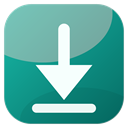

Chrome and Edge ask MDM to pair; approve the one-time prompt in MDM and the token is filled in. Firefox: paste the token shown in MDM. The port must match Browser integration.
Choose what the extension does while you browse.
The bridge only listens on 127.0.0.1 and authenticates paired extensions.
In MDM, open Connections and turn on browser integration.
Keep MDM running and use the same port. Chrome and Edge ask MDM for the token; approve the prompt in MDM. Firefox users paste the token from MDM.
Right-click a link, video, or audio element and choose Download with MDM. Video qualities open a confirmation window in MDM first.